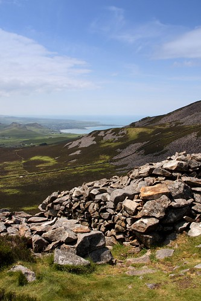

Mynedfa Tre’r Ceiri
 Mynedfa’r de orllewin
Mynedfa’r de orllewin
Tre’r Ceiri yw’r enwocaf o fryngaerau Oes Haearn Gwynedd, ac mae lle i ddadlau mai hon yw’r fwyaf trawiadol. Yn sicr, mae’r muriau anferth a’r cytiau crynion yn amlwg iawn i unrhyw un sydd yn ymweld â’r safle.
Edrych o’r fynedfa i’r de orllewinSaif Tre’r Ceiri ar y copa mwyaf dwyreiniol o dri chopa’r Eifl ar benrhyn Llŷn, gyda phentrefi Llanaelhaearn a Trefor wrth droed y mynydd. Ar y man uchaf, mae’r tir yn codi i 485 medr uwch lefel y môr, a gyda golygfeydd dros Lŷn i’r gorllewin, Môn i’r gogledd ac Eryri i’r dwyrain.
Ychydig o wybodaeth sydd yna go iawn am pryd yn union y sefydlwyd y gaer, ond mae archeolegwyr yn weddol gytûn fod pobl wedi ailddefnyddio Tre'r Ceiri gaer yn ystod y cyfnod Rhufeinig. Y tebygrwydd yw fod y cyfnod cychwynnol yn dyddio i’r canrifoedd olaf cyn Crist, fod cyfnod segur wedyn, cyn iddi gael ei hailddefnyddio ar ôl y Concwest Rhufeinig. Diddorol felly ceisio dychmygu perthynas y llwyth Celtaidd lleol a’r Rhufeiniaid draw yn Segontium.
Yn Saesneg mae’r enw yn cael ei gyfieithu fel ‘Town of the Giants’ a chawn awgrym mai ‘ceiri’ oedd y lluosog o gawr yn nhafodiaith Sir Gaernarfon. Diddorol yw’r hen enwau sy’n perthyn i’r cyfnod cyn i archeolegwyr ddechrau dadansoddi ac archwilio’r safleoedd yma a dechrau gosod dyddiadau pendant iddynt − efallai mai dyma sut roedd trigolion lleol yn esbonio’r fath adeiladwaith hynafol ar ben y mynydd: rhaid mai gwaith y cewri ydoedd. Stori debyg sydd i enw Côr y Cewri neu Stonehenge, sef yr un ymdrech i esbonio’r adeiladwaith hynod.
 Mynedfa o’r de orllewin i Dre’r Ceiri
Mynedfa o’r de orllewin i Dre’r Ceiri
Dwy brif fynedfa oedd i’r gaer, o’r de-orllewin ac o’r gogledd-orllewin, ac roedd tair mynedfa lai (postern) ar yr ochrau dwyreiniol, gogleddol a gorllewinol. Nodwedd ddiddorol iawn i’r fynedfa fechan ar ochr ogleddol y gaer (sydd i bob pwrpas yn fwy o dwll yn y wal o’i chymharu â’r ddwy brif fynedfa) yw’r capan dros y drws, neu’r lintel. Atgyweiriwyd y capan drws yma a rhan o’r muriau gan Ymddiriedolaeth Archeolegol Gwynedd yn 1990-94. Er gwybodaeth, mae unrhyw garreg sydd wedi ei hailgodi gan yr Ymddiriedolaeth wedi ei marcio â thwll bach crwn ar ochr y garreg.